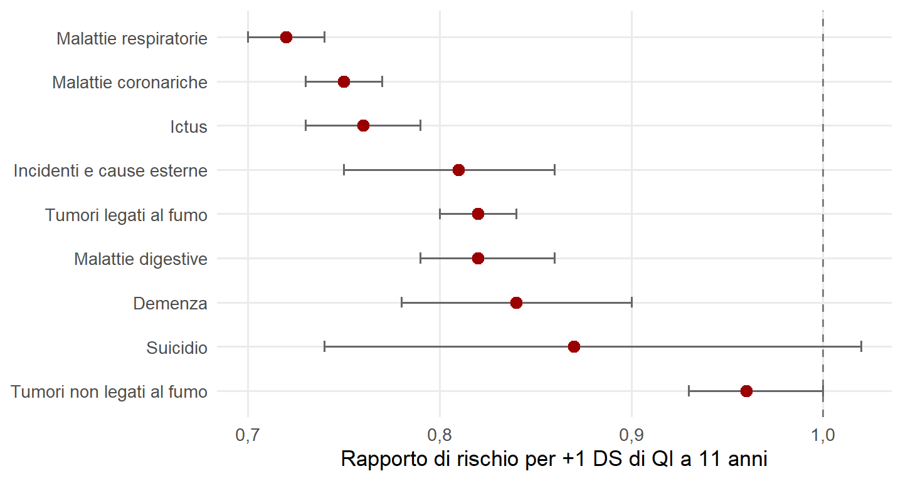

16 Salute e longevità
Un test somministrato a 11 anni prevede la probabilità di essere vivi a 76. Detta così, sembra una provocazione. È invece uno dei risultati più solidi della ricerca sull’intelligenza, e ha dato origine a un campo di studi con un nome proprio: l’epidemiologia cognitiva, che studia le associazioni prospettiche fra abilità cognitive ed esiti di salute (Deary et al., 2021).
Prospettiche significa che l’intelligenza viene misurata prima, spesso nell’infanzia, e gli esiti di salute molti anni dopo. Questo esclude una spiegazione ovvia: che siano le malattie dell’età adulta ad abbassare il QI. Non esclude però molte altre spiegazioni, ed è proprio sulla loro natura che conviene ragionare.
16.1 La sorpresa scozzese
Nel 1932 il Consiglio scozzese per la ricerca educativa somministrò un test di intelligenza a quasi tutti i bambini delle scuole scozzesi nati nel 1921. Più di sessant’anni dopo, un gruppo di ricercatori cercò di rintracciare i 2.792 bambini dell’area di Aberdeen per sapere se fossero ancora vivi. Chi era morto prima del 1997 aveva ottenuto a 11 anni un punteggio medio di circa quattro punti inferiore a quello di chi era ancora in vita (Whalley & Deary, 2001). Fra le donne, circa il 70% del quarto con i punteggi più alti era vivo a 76 anni, contro circa il 45% del quarto con i punteggi più bassi. Fra gli uomini la differenza era simile, con un andamento complicato dalle morti nella Seconda guerra mondiale, che avevano colpito di più chi aveva punteggi alti.
Lo stesso schema si è ripetuto in molte coorti: coscritti in Svezia, Danimarca, Norvegia e Israele, campioni statunitensi e britannici. Una meta-analisi di 16 studi, con oltre un milione di partecipanti seguiti per periodi fra 17 e 69 anni, ha stimato che un punteggio cognitivo più alto di una deviazione standard si associa a un rischio di morte inferiore del 24% (Calvin et al., 2011). L’associazione era simile per uomini e donne e non mostrava segni evidenti di pubblicazione selettiva.
16.2 Di che cosa si muore meno
Il secondo grande studio scozzese, del 1947, ha permesso di guardare alle cause. Più di 65.000 persone testate a 11 anni sono state seguite per 68 anni. Un QI infantile più alto di una deviazione standard si associava a un rischio minore di morte per quasi tutte le cause principali (Figura 16.1): malattie respiratorie, malattie coronariche, ictus, tumori legati al fumo, malattie dell’apparato digerente, demenza, incidenti (Calvin et al., 2017). Il legame era quasi lineare lungo tutta la distribuzione: non riguardava solo chi aveva punteggi molto bassi.
Un rapporto di rischio di 0,75 significa che, a ogni momento del periodo osservato, chi aveva un QI infantile più alto di quindici punti aveva un rischio di morire per quella causa pari a circa tre quarti di quello di chi stava nella media. Non è una piccola differenza. È però una differenza di probabilità fra gruppi, non una previsione sul singolo: moltissime persone con QI alto muoiono giovani, moltissime con QI basso vivono a lungo.
16.3 Perché? Tre percorsi
L’associazione fra intelligenza e longevità è complessa, piena di mediatori e in parte dovuta a cause comuni. Si possono distinguere tre percorsi principali, non alternativi fra loro (Figura 16.2).
Il percorso socioeconomico. Un QI più alto favorisce più istruzione, che porta a lavori più sicuri, meno logoranti e meglio pagati, che a loro volta danno accesso ad abitazioni più salubri, quartieri meno inquinati e cure migliori. I dati sono istruttivi. Nella meta-analisi citata, tenere conto dello status socioeconomico della famiglia d’origine non modificava quasi l’associazione: le condizioni dell’infanzia non sembrano la causa comune di QI e longevità. Tenere conto della posizione sociale da adulti e del livello di istruzione la riduceva invece di circa un terzo e di circa la metà (Calvin et al., 2011). È compatibile con l’idea che istruzione e lavoro siano in parte la strada attraverso cui l’intelligenza si traduce in salute. Ma una riduzione statistica non distingue un mediatore da un fattore confondente, e il resto dell’associazione chiede comunque altre spiegazioni.
Il percorso della health literacy. Mantenersi in salute è anche un compito cognitivo. Da un lato richiede di capire, accettare e mettere in pratica procedure mediche e istruzioni sui farmaci. Dall’altro richiede di attenersi a stili di vita salutari, cioè valutare rischi, pianificare, rinunciare a gratificazioni immediate. Le persone con punteggi più alti tendono a fumare meno, a bere meno alcol e meno bevande zuccherate, a fare più attività fisica, ad avere una dieta migliore. Linda Gottfredson ha proposto che l’intelligenza sia una delle cause fondamentali delle disuguaglianze di salute, proprio perché la gestione della propria salute è, di fatto, una lunga serie di problemi da risolvere (Gottfredson, 2004).
Il percorso dell’integrità del sistema e della genetica. Un’ipotesi diversa è che punteggi cognitivi alti e buona salute siano entrambi segni di un organismo ben costruito e ben funzionante. Un sistema nervoso integro, efficiente e ben sviluppato sarebbe un indicatore di un organismo resistente in generale (Deary, 2012). Una parte di quella qualità di base ha origine genetica: analisi su gemelli e su dati genetici molecolari suggeriscono che l’associazione fra intelligenza e durata della vita sia in buona parte dovuta a fattori genetici comuni (Arden et al., 2016), un esempio della pleiotropia vista nel capitolo sulla genetica molecolare. Un’altra parte passa per la salute fisica nell’infanzia, che influenza lo sviluppo del sistema nervoso e si prolunga nella salute adulta. In questo percorso l’intelligenza non causa la longevità: QI e longevità sono correlati perché dipendono dalle stesse condizioni di partenza.
![Tre schemi a frecce, uno sotto l'altro. Fattori socioeconomici: più QI, più scolarità, lavori più sicuri, meno logoranti e meglio retribuiti, ambienti di vita più sani e cure migliori, longevità. Health literacy: più QI porta a maggiore capacità di capire e attenersi a pratiche salutari, che si divide in due rami, capire e attuare procedure mediche e istruzioni sui farmaci, e attenersi a stili di vita salubri; entrambi portano alla longevità. Integrità del sistema e genetica: varianti genetiche favorevoli portano a integrità, efficienza e sviluppo del sistema nervoso, che porta a più QI; le varianti genetiche influenzano anche la salute fisica infantile, che influenza il sistema nervoso e la salute fisica adulta, che porta alla longevità. Una linea tratteggiata collega più QI e longevità.](salute-e-longevita_files/figure-html/fig-percorsi-1.png)
16.4 Invecchiamento e demenza
Un capitolo a parte riguarda l’invecchiamento cognitivo. Il QI infantile prevede anche il rischio di morte per demenza, come si è visto nella coorte scozzese. Una parte di questa associazione è probabilmente legata al concetto di riserva. A parità di alterazioni cerebrali dovute all’età o alla malattia, alcune persone mantengono un funzionamento migliore di altre. Si distingue fra una riserva cerebrale, legata a caratteristiche strutturali come il volume del cervello, e una riserva cognitiva, legata al modo in cui i compiti vengono svolti e alle strategie disponibili. Studi epidemiologici indicano che istruzione, complessità del lavoro e attività intellettuali nel tempo libero si associano a un rischio di demenza più basso (Stern, 2012).
Il quadro ha una conseguenza pratica per la valutazione. Una persona con un livello cognitivo di partenza elevato può mostrare punteggi ancora nella media quando il declino è già in corso; una con un livello di partenza basso può sembrare compromessa senza esserlo. Interpretare un punteggio nell’età anziana richiede quindi di stimare, quando possibile, il livello precedente, per esempio attraverso istruzione, professione o prove di conoscenze cristallizzate, che risentono meno dell’invecchiamento.
16.5 Che cosa se ne può concludere
L’associazione fra intelligenza e salute è robusta, replicata e di dimensioni non trascurabili. Le sue implicazioni pratiche sono però diverse da quelle che si potrebbero immaginare.
Non suggerisce di usare il QI per fare previsioni sanitarie individuali: la previsione sarebbe troppo imprecisa. Suggerisce invece che la complessità delle informazioni e delle procedure sanitarie è un fattore di disuguaglianza. Istruzioni più semplici, percorsi di cura meno faticosi, sistemi che non richiedono di districarsi da soli fra burocrazie e prescrizioni possono ridurre lo svantaggio di chi ha più difficoltà a risolvere problemi, qualunque ne sia la causa. Come per la scuola, il percorso dal punteggio all’esito passa per istituzioni costruite dagli esseri umani, e quindi modificabili.
Resta infine una distinzione da tenere sempre presente. Queste associazioni descrivono differenze fra individui all’interno di una popolazione. Non si possono trasferire, senza altre evidenze, alle differenze medie fra gruppi o fra paesi, nelle quali la salute dipende da molte altre condizioni.